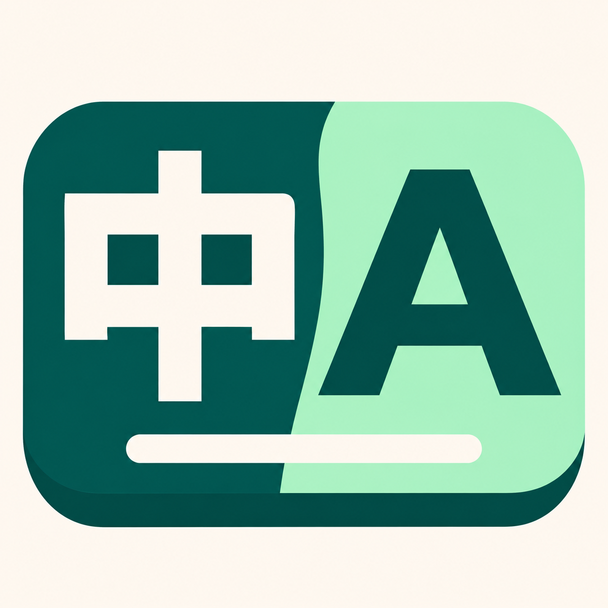

Mixed Cangjie
中英混合倉頡鍵盤
用同一套 QWERTY 按鍵輸入英文及倉頡中文。按空白鍵保留英文原碼，點選候選字輸入中文。
功能
倉頡三代、可選速成混合輸入、英文詞義與拼字候選、中文關聯字，以及可關閉的本機選字記憶。支援個人詞庫、主題配色及系統語音輸入。
內建字典與一般文字候選在本機運作。App 頂部的廣告及私隱訊息會使用網絡；可選語音輸入由裝置的語音供應商處理。
支援及私隱
開發者：Mycroft Lab
支援與私隱查詢：lau@mycroft.hk

中英混合倉頡鍵盤
用同一套 QWERTY 按鍵輸入英文及倉頡中文。按空白鍵保留英文原碼，點選候選字輸入中文。
倉頡三代、可選速成混合輸入、英文詞義與拼字候選、中文關聯字，以及可關閉的本機選字記憶。支援個人詞庫、主題配色及系統語音輸入。
內建字典與一般文字候選在本機運作。App 頂部的廣告及私隱訊息會使用網絡；可選語音輸入由裝置的語音供應商處理。
開發者：Mycroft Lab
支援與私隱查詢：lau@mycroft.hk